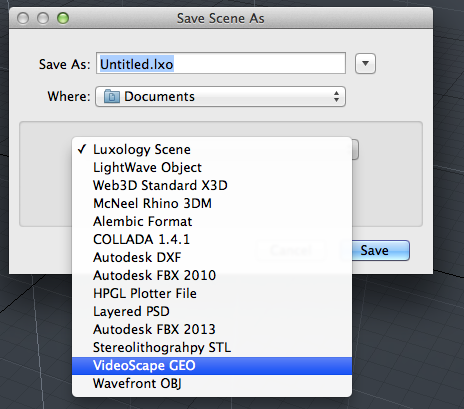

Io scene geo¶
Io_scene_geo is a basic example plugin. This wiki page is intended as a walkthrough of the code in order to help you better understand the SDK.
When installed, this plugin adds a saver/loader that loads/saves VideoScape Geo files.
Geo saver option highlighted above.
Code Walkthrough¶
Class Declarations¶
Here we want to create a custom line parser, so we have CGEOParser inherit from CLxLineParser.
The CLxLineParser class is slightly different in terms of subclassing it as it is itself already a fully functional parser for general line-based text formats. As such, we don’t have to rewrite any functions to get it to work. Instead, subclassing it allows us to alter some of the settings of the original parser to get it to handle how we want. We do this by redeclaring the function that corresponds to the setting we want and having it return true instead of false. In our case, we redeclare functions which cause the parser to strip white space from the start and end of lines and skip blank lines.
This class is later called to make another class into a file parser with the setting we have specified.
1 2 3 4 5 6 | class CGEOParser : public CLxLineParser
{
public:
virtual bool lp_StripWhite () { return true; }
virtual bool lp_SkipBlank () { return true; }
};
|
This class is really two classes in one. We want our class to load scenes, but before we load the scenes we need to parse them, so we need to subclass so this class can do both.
First off, we want this class to be its own parser, so we inherit from the custom line parser we just created, CGEOParser. We give access to this parser through the sl_Parser method class, which returns the parser through a this pointer.
Secondly, we want our class to be a scene loader, so we inherit from CLxSceneLoader. All of the utilities for loading the scene we get from CLxSceneLoader. However, we also want this class to be a parser, so we need to override the recognize method, which verifies that the file we are going to parse is valid, and the parsing methods.
1 2 3 4 5 6 7 8 9 10 11 12 13 14 15 | class CGEOLoader : public CLxSceneLoader, public CGEOParser
{
public:
virtual CLxFileParser * sl_Parser () { return this; }
virtual bool sl_Recognize ();
virtual bool sl_ParseInit ();
virtual bool sl_ParseDone ();
virtual bool sl_Parse (LxResult *);
bool read_vrts;
list<string> color_list;
static LXtTagInfoDesc descInfo[];
};
|
We want this class to set the format for the GEO file we will be saving. As such, we inherit from CLxLineFormat, which defines all the methods for a vanilla format for line-based text files. The only function we redeclare is lf_Separator, which governs what separates each element. By setting the function to return a space we make it so that there is a space separating elements on the same line.
1 2 3 4 5 | class CGEOFormat : public CLxLineFormat
{
public:
virtual const char * lf_Separator () { return " "; }
};
|
Like the loader, we want this class to be two things: a saver and a format and its own format. We want this class to be its own format so that when we call the methods to save the file we have the format in which it is going to be saved already defined. We give access to the format through the ss_Format function, which returns the format through a this pointer.
To also give the class the ability to save scenes we inherit from CLxSceneSaver. We have a custom format for our file, so we have redeclared all the functions that deal with the file(Verify, Save, Point, Polygon).
The GatherColors() function stores the colors of the polygons in the scene.
The Verify method is an optional method that displays to the user what will happen to their data with the format that we are saving it in. The Save function is run after the Verify function, and calls the GatherColors function as well as the WritePolys function; the WritePolys function, in turn, calls Point and Polygon.
1 2 3 4 5 6 7 8 9 10 11 12 13 14 15 16 17 18 19 | class CGEOSaver : public CLxSceneSaver, public CGEOFormat
{
public:
virtual CLxFileFormat * ss_Format () { return this; }
virtual void ss_Verify ();
virtual LxResult ss_Save ();
virtual void ss_Point ();
virtual void ss_Polygon ();
void GatherColors ();
static LXtTagInfoDesc descInfo[];
map<LXtPointID,unsigned> pnt_index;
unsigned pnt_count;
map<string,unsigned> matr_color;
bool get_matr;
};
|
./Initialize_(index)¶
Intialize is called when we add the plugin to modo, and is the utility that exports the server. The LXx_ADD_SERVER method is simply a wrapper that is identical to normal method of adding a server, with the arguments being (interface_to_be_added, class_you_depend_on, server_name).
This section exports the Overview#nexus_Servers that take the contents of CGEOLoader and CGEOSaver respectively. They are both given the name vs_GEO.
1 2 3 4 5 6 | void
initialize ()
{
LXx_ADD_SERVER (Loader, CGEOLoader, "vs_GEO");
LXx_ADD_SERVER (Saver, CGEOSaver, "vs_GEO");
}
|
./Server_Tags¶
Servers tags are examined when the server is initialized, and give information about the server. We set the tags in this case by taking descinfo[] arrays and associating the relevant data with the corresponding flags.
The tags here indicate that the plugin is a scene loader that loads a mesh.
1 2 3 4 5 6 | LXtTagInfoDesc CGEOLoader::descInfo[] = {
{ LXsLOD_CLASSLIST, LXa_SCENE },
{ LXsLOD_DOSPATTERN, "*.geo" },
{ LXsSRV_USERNAME, "VideoScape GEO"},
{ 0 }
};
|
Similarly, since the saver in this plugin loads a mesh it is a scene saver
1 2 3 4 5 6 | LXtTagInfoDesc CGEOSaver::descInfo[] = {
{ LXsSAV_OUTCLASS, LXa_SCENE },
{ LXsSAV_DOSTYPE, "GEO" },
{ LXsSRV_USERNAME, "VideoScape GEO"},
{ 0 }
};
|
Implementation¶
The Recognize method reads the first line and sees if it matches the sync pattern. It returns true for a match, meaning that the file is in the format that we want.
1 2 3 4 5 | bool
CGEOLoader::sl_Recognize ()
{
...
}
|
Parsing the recognized file (which has been reset to the start again) consists of three phases. The init method adds a mesh item to the scene and reads past the sync line.
1 2 3 4 5 | bool
CGEOLoader::sl_ParseInit ()
{
...
}
|
The sl_Parse() method is called as long as it returns true.
1 2 3 4 5 6 | bool
CGEOLoader::sl_Parse (
LxResult *error)
{
...
}
|
The done method is called when parsing is complete. We collapse the list of colors that we created during parsing and create materials for them all.
1 2 3 4 5 | bool
CGEOLoader::sl_ParseDone ()
{
...
}
|
The optional ss_Verify() method can be used to display a message to the user about what will happen to their data using this format. Ideally a real message table should be used to support translation, but common message 2020 allows for a general string. The scene could be examined at this point to determine if there was anything that would be lost.
1 2 3 4 5 | void
CGEOSaver::ss_Verify ()
{
...
}
|
The save method performs the actual save. Note that this is called twice; first in a dummy mode with the format output disabled and then for real. In the dummy mode the WritePoints() and WritePolys() calls will not do anything except tabulate how many elements would be traversed in the real case. Because of the multiple passes and the fact that this same instance of the saver is used for all saving during a single session, all persistent states should be reset between uses.
1 2 3 4 5 | LxResult
CGEOSaver::ss_Save ()
{
...
}
|
This is called for every polygon in the current mesh from WritePolys(). We make two passes through the polygons – the first to collect the mask tags, and the second to actually write the polygons. Writing just writes the number of vertices, the vertex indicies, and the color for the polygon’s material.
1 2 3 4 5 | void
CGEOSaver::ss_Polygon ()
{
...
}
|
After the first pass through the polygons, we compute the color for each material tag that we stored in the map. This simply looks up the mask for the tag and looks through its layers. The first material that it finds we read the diffuse color. This can’t be done while enumerating polygons because only one item scan can be performed at once and we’re already scanning meshes.
1 2 3 4 5 | void
CGEOSaver::GatherColors ()
{
...
}
|
This method is called for every point during WritePoints(). We write the coordinates to a line and save the index of the point in our map.
1 2 3 4 5 | void
CGEOSaver::ss_Point ()
{
...
}
|